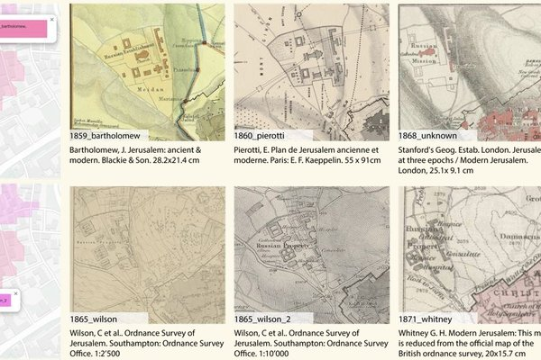
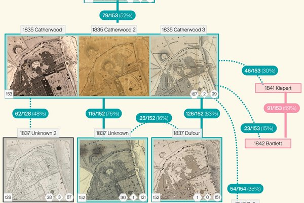
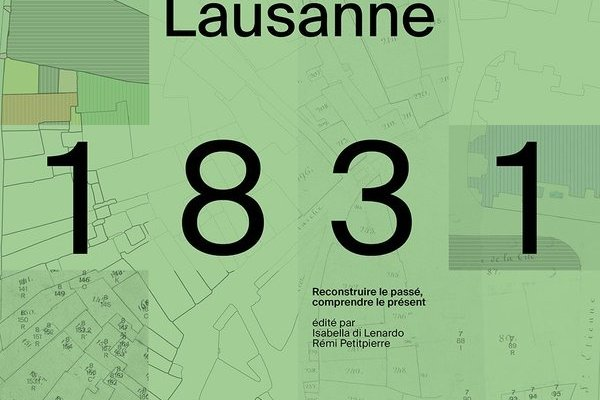
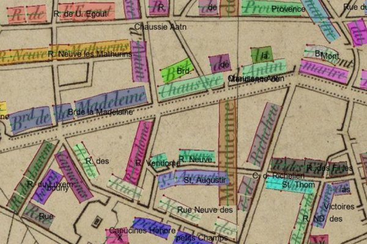
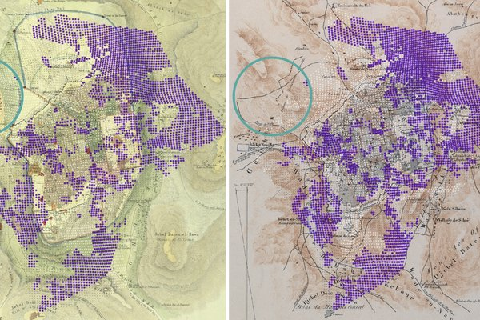
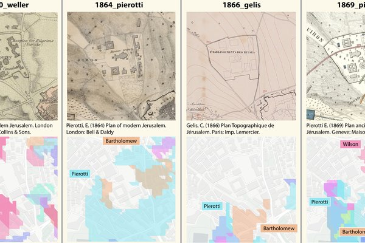
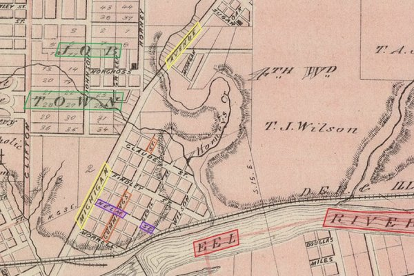

Cartographic Stemmatology: Segmenting local deformation similarities in historical maps of Jerusalem
Vaienti, Beatrice; di Lenardo, Isabella; Kaplan, Frédéric
e-Perimetron 2026
I recently completed my PhD in Digital Humanities at the Digital Humanities Laboratory – DHLAB (EPFL). I hold a MSc in Building Engineering and Architecture. In my research I studied the Western cartographic depiction of Jerusalem between 1810 and 1925, focusing on errors and biases, and how they can be used to discover historical information. I now still work in Lausanne, as the Project Manager for the Local Time Machine network, where I follow the European projects 3DBigDataSpace, 3D-4CH, and INFINITY, and work on the Time Atlas. I also remain a Guest Researcher at the DHLAB, EPFL.

Cartographic Stemmatology: Segmenting local deformation similarities in historical maps of Jerusalem
Vaienti, Beatrice; di Lenardo, Isabella; Kaplan, Frédéric
e-Perimetron 2026

A Genealogy of Jerusalem Maps (1810-1925): Reconstructing Cartographic Lineages through Computational Methods
Vaienti, Beatrice
EPFL 2025

Analyse de la représentation cartographique du « relief » dans le cadastre Berney de Lausanne
Vaienti, Beatrice
Lausanne 1831: Reconstruire le passé, comprendre le présent 2025

Exploring cartographic genealogies through deformation analysis: case studies on ancient maps and synthetic data
Vaienti, Beatrice; Di Lenardo, Isabella; Kaplan, Frédéric
Cartography and Geographic Information Science 2025

Georeferencing historical maps using local feature matching and Delaunay consistency
Vaienti, Beatrice; di Lenardo, Isabella; Kaplan, Frédéric
Cartography and Geographic Information Science 2025

Introduction à l'Atlas
Vaienti, Beatrice; Petitpierre, Rémi; Bianchi, Irene
Lausanne 1831: Reconstruire le passé, comprendre le présent 2025

Recognizing and Sequencing Multi-word Texts in Maps Using an Attentive Pointer
Zou, Mengjie; Dai, Tianhao; Petitpierre, Rémi; Vaienti, Beatrice; Kaplan, Frédéric; di Lenardo, Isabella
2025
Reconstructing Saint Mark's Square in Venice: A 4D Model with Point Cloud Integration for Analyzing Historiographical Hypotheses
di Lenardo, Isabella; Vaienti, Beatrice; Guhennec, Paul; Ubelmann, Yves; Bianchi, Irene; Kaplan, Frédéric
Heritage 2025

Segmentation and Clustering of Local Planimetric Distortion Patterns in Historical Maps of Jerusalem
Vaienti, Beatrice; di Lenardo, Isabella; Kaplan, Frédéric
ISPRS International Journal of Geo-Information 2025

Deformative Signatures: Studying Cartographic Deformations as a Source of Knowledge in 19th Century Jerusalem
Vaienti, Beatrice
30th International Conference on the History of Cartography 2024

ICDAR 2024 competition on historical map text detection, recognition, and linking
Li, Zekun; Lin, Yijun; Chiang, Yao-Yi; Weinman, Jerod; Tual, Solenn; Chazalon, Joseph; et al.
International Conference on Document Analysis and Recognition 2024

Tracing Cartographic Errors in the Western Representation of 19th Century Jerusalem
Vaienti, Beatrice; di Lenardo, Isabella; Kaplan, Frederic
Digital Humanities 2024: Reinvention \& Responsibility. 06-09 August 2024, Arlington, Virginia, USA 2024

From Automated Bootstrapping to Collaborative Editing: A Framework for 4D City Reconstruction.
Vaienti, Beatrice; Guhennec, Paul; Dupertuis, Didier; Petitpierre, Rémi
DH 2023

Machine-Learning-enhanced procedural modeling for 4D historical cities reconstruction
Vaienti, Beatrice; Petitpierre, Rémi; di Lenardo, Isabella; Kaplan, Frédéric
Remote Sensing 2023

A data structure for scientific models of historical cities: extending the CityJSON format
Vaienti, Beatrice; Guhennec, Paul; di Lenardo, Isabella
Proceedings of the 6th ACM SIGSPATIAL International Workshop on Geospatial Humanities 2022

Analysis of Leonardo da Vinci's architecture through parametric modeling: a method for the digital reconstruction of the centrally planned churches depicted in Ms. B
Vaienti, Beatrice; Apollonio, Fabrizio Ivan; Gaiani, Marco
Heritage 2020
Analysis, interpretation and digital reconstruction of the centrally planned churches of Leonardo da Vinci’s Manuscript B
Vaienti, Beatrice
Curriculum Vitae — PhD in Digital Humanities, EPFL
Want to get in touch? Send me a message below.